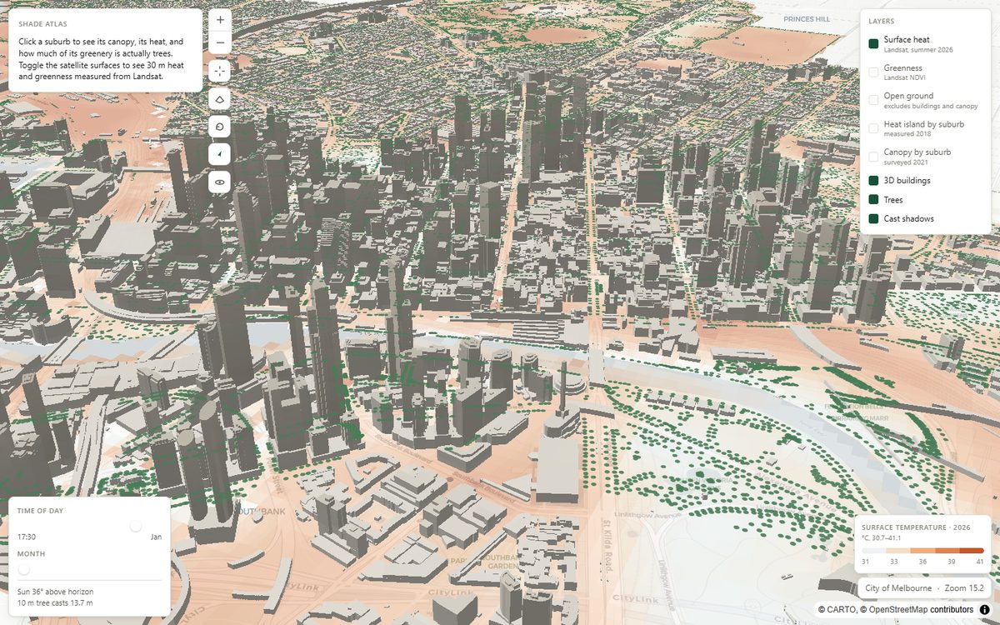

What this is
You describe the layers you want; the package builds the MapLibre sources and layers and hands the map back. It does not wrap MapLibre away — anything MapLibre can do, you can still do on the instance you get.
What it is not: a basemap, a tile server, or a charting library. It draws city-scale physical data on a map. If you need a scatter plot, use a chart library.

Install and first map
npm install deltamap-gl maplibre-gl reactPeers are maplibre-gl >=4 <7 and react >=18. Import
MapLibre's stylesheet once, then:
import 'maplibre-gl/dist/maplibre-gl.css'
import { UrbanClimateMap, MapControls, StatusBar } from 'deltamap-gl'
export function App() {
return (
<UrbanClimateMap
config={{
centre: [144.9558, -37.8136],
camera: { zoom: 15, pitch: 55 },
sky: true,
layers: [
{ kind: 'buildings', id: 'blds', data: '/data/buildings.geojson' },
{ kind: 'trees', id: 'trees', data: '/data/trees.geojson' },
],
}}
>
<MapControls />
<StatusBar label="Melbourne" />
</UrbanClimateMap>
)
}Layers draw in the order you list them, because MapLibre draws in
insertion order. Put shadows before whatever casts them.
Layer kinds
Seven kinds. Every one takes an id, optionally hidden to start
switched off, and optionally sourceId to share one source between layers.
buildings — extruded to surveyed heights
{ kind: 'buildings', id: 'blds', data: '/data/buildings.geojson',
ramp: [[0, '#e7e4dd'], [200, '#bab4a7']], opacity: 0.95 }Reads a height property, falling back to a podium height then to 4 m. Set the property
names with fields — see Your data.
trees — discs zoomed out, 3D crowns zoomed in
{ kind: 'trees', id: 'trees', data: '/data/trees.geojson',
crownMinZoom: 16, maxViewportTrees: 900 }Pass the point collection to <UrbanClimateMap trees={...}> as well —
crowns and shadows are generated per viewport and need the features in JavaScript, not only
in the map. useTreeData(url) loads them.
shadows — cast from real solar geometry
{ kind: 'shadows', id: 'shade', opacity: 0.32 }Needs a trees layer to cast from. Drive the time with
<SunControl /> or the initialDate prop.
choropleth — polygons coloured by one property
{ kind: 'choropleth', id: 'canopy', data: areas, field: 'canopy_pct',
ramp: [[0, '#f0f4f1'], [20, '#4a7c59']],
outline: { color: '#fff', width: 1 } }Choropleth layers are interactive by default: hover and click feed
<HoverReadout /> and the onSelect prop.
raster — a georeferenced image over four corners
{ kind: 'raster', id: 'heat', url: '/raster/lst.png',
corners: [[w, n], [e, n], [e, s], [w, s]], opacity: 0.45 }This is how a continuous surface — temperature, greenness, land cover — reaches the map without a tile server. One PNG, four coordinates. Past a few thousand pixels a side, use real tiles instead.
If you generate a manifest describing several rasters,
useRasterManifest(url) turns it into specs and matching legends, so a
colour ramp cannot drift away from the image it describes.
fill and ring
{ kind: 'fill', id: 'zones', data: '/data/zones.geojson', color: '#3e6f94' }
{ kind: 'ring', id: 'radius', color: '#17513a', width: 1.6 }ring starts empty; set its data at runtime to show the radius a measurement
covers.
UI kit
Each of these reads its state from <UrbanClimateMap>, so in an app they
are one line each.
| Component | Does |
|---|---|
<MapControls /> | Zoom, recentre, tilt, rotate, compass, auto-orbit. offset clears a sidebar. |
<LayerToggle /> | Switches, keyed by layer id. exclusive for layers that must not stack. |
<Legend /> | Colour ramp with tick labels. Takes a spec, usually from useRasterManifest. |
<HoverReadout /> | Tooltip for the feature under the cursor. You supply the format. |
<SunControl /> | Time and month sliders, plus sun altitude and shadow length. Renders nothing without a shadows layer. |
<StatusBar /> | Place name and live zoom. |
<Notice /> | A caveat attached to what is on screen. |
<Sidebar />, <Panel />, <Stat /> | Left column and cards. The column is click-through; only its cards catch the mouse. |
<Hero />, <Section />, <InsightGrid /> | Landing-page pieces. Reveal and CountUp respect prefers-reduced-motion. |
Components style themselves inline from a theme object. There is no CSS file to import and
no framework assumed — pass theme={DARK} or your own.
Your data, your field names
Nothing is hardcoded to one city. Defaults match City of Melbourne open data, because a default that works for somebody beats one that works for nobody. Override what differs:
config={{
centre: [lon, lat],
fields: { buildingHeight: 'height_m', treeSpecies: 'species', treeDbh: 'dbh_cm' },
layers: [ ... ],
}}Share one source across layers so the data loads once:
{ kind: 'choropleth', id: 'canopy', sourceId: 'areas', data: areas, field: 'canopy_pct', ramp },
{ kind: 'choropleth', id: 'heat', sourceId: 'areas', data: areas, field: 'uhi', ramp },
Three decisions worth knowing
Every 3D layer is fill-extrusion
MapLibre draws extrusions in one depth pass, so they occlude each other correctly. A
circle layer is a screen-space billboard: it never depth-tests against buildings,
so tree dots paint over towers and appear to float through them. Cast shadows are a 0.4 m
extrusion for the same reason — a flat fill is drawn after the extrusion pass
and would paint across roofs no tree could shade.
Trees swap render mode at zoom 16
Extruded crowns are correct but cost geometry. Below the threshold you get cheap ground
discs; above it, real 3D. Only trees in the viewport are processed, capped by
maxViewportTrees — without that cap a wide view over a large inventory rebuilds
tens of thousands of polygons on every pan.
Rasters resample nearest
Smoothing a 30 m measurement invents detail that was never observed. The blocky cells are the honest rendering.
Limits
- Geometry is equirectangular. Fine across a few kilometres, wrong across tens. Do not use it near the poles.
- Solar dates use the viewer's timezone. A map of Melbourne viewed from London puts the sun in the wrong place unless you build dates with an explicit offset.
- Crown radii from the built-in species table are display geometry, not a growth
model. Pass
crownRadiusif you have fitted curves. - MapLibre loads sources eagerly. A hidden layer still downloads its data — do not point one at a large file you are not showing.
- Vite users: add
optimizeDeps: { exclude: ['maplibre-gl'] }. Pre-bundling rewrites the import of MapLibre's worker without emitting it, and a missing worker silently kills every GeoJSON source while the basemap carries on looking fine.